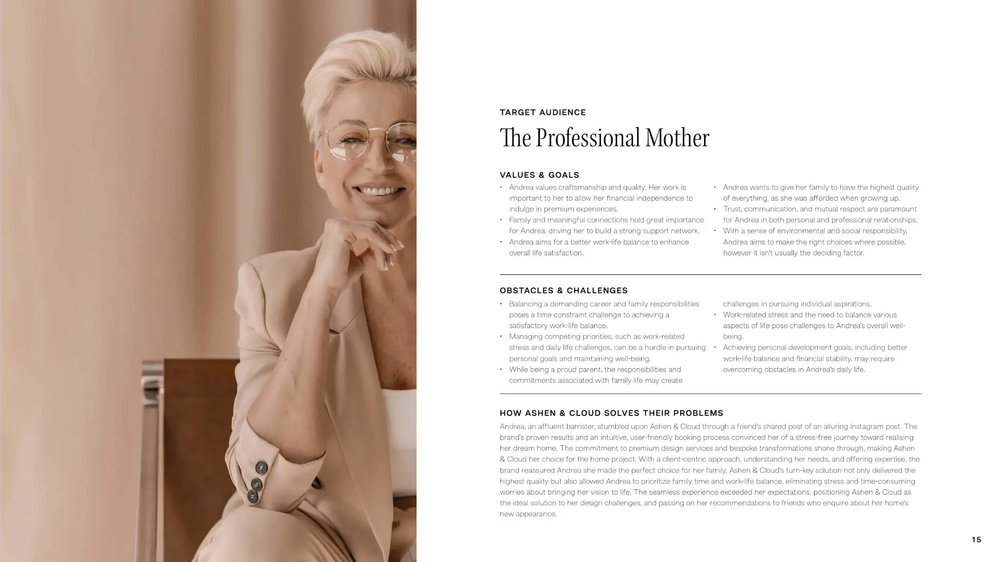
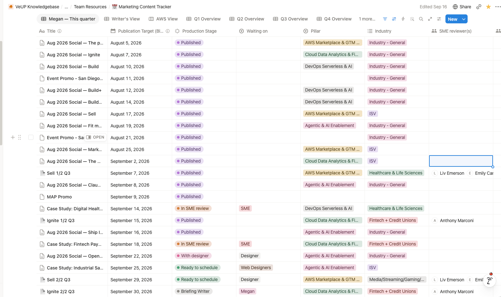
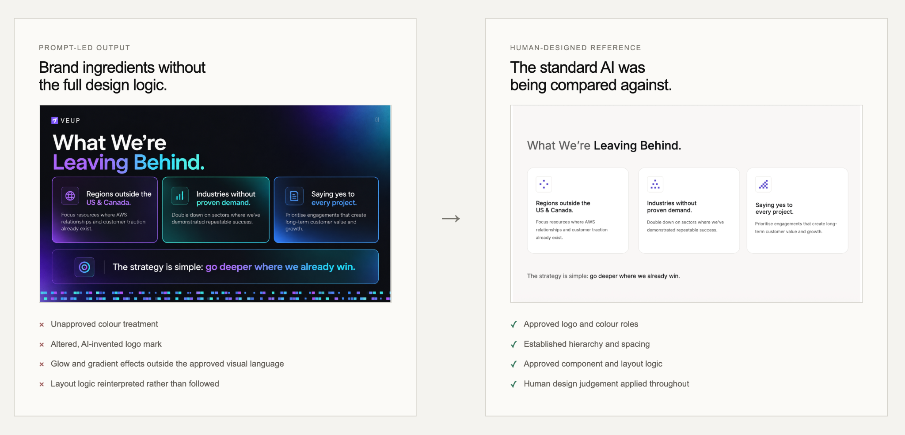
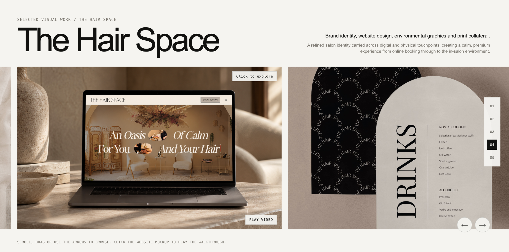

Brand and creative operations leadership
I’m Megan O’Connor. I work across brand strategy, creative direction and the systems that help good work scale. From customer insight and positioning to integrated marketing and delivery, I connect commercial priorities with clear creative direction, lead specialist contributors and use AI-enabled workflows without losing human judgement.
Point of view
Marketing has changed. Most marketing systems haven’t.
More channels. More content. More personalisation. More pressure to prove impact. And now, more ways to make it all. AI can put customer-facing creative in anyone’s hands. But when the briefs, brand guardrails, knowledge and workflows underneath it aren't keeping pace, greater speed can quickly become greater inconsistency. We don’t have an output problem. We have a systems problem.
It is not glamorous. But neither is losing half a Tuesday looking for the final-final-v3-approved deck, or having your designers spend their time correcting AI-generated work that had the brand guidelines but none of the judgement behind them.
The best marketing systems make the right thing easier to do: clearer briefs, trusted assets, stronger brand guardrails, useful automation and fewer unnecessary handoffs.
Which leaves more time for the work that actually needs human judgement: sharper thinking, stronger ideas and better decisions.
Selected work / 06 projects
See the thinking
in practice.
Different problems, same question: what needs to change for the work to get better?
-
Brand direction
Leading complex creative work and equipping others to deliver it at scale.

-
Customer insight and brand strategy
Turning customer and market understanding into a clear positioning and creative direction.

-
Company operating system
Connecting goals, teams, knowledge and workflows across the business.

-
Marketing and creative operating system
Making delivery faster, ownership clearer and the process more predictable.

-
AI design system
Putting AI to work with the guardrails, design intelligence and human judgement that quality depends on.

-
Visual design and craft
Carrying strong ideas across formats, with consistent quality and considered creative judgement.
